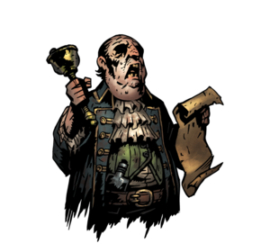

Las actividades consisten principalmente en cazar monstruos dejados por el ancestro, sin embargo, en la aldea pueden haber muchos mas eventos
Los eventos se producen de forma aleatoria o al completar ciertas misiones específicas y pueden afectar a los héroes en su siguiente expedición o dar oportunidades únicas para la aldea e incluso pueden generar encuentros únicos contra enemigos particulares.
Son bastantes como para mencionarse en este pequeño artículo, pero destaco:
- Incursión Bandida
- La aldea sufre un ataque de parte de un grupo de bandidos comandados por Vvulf que en caso de ignorarse, la aldea será saqueada.
- Ladrón de la Noche
- El Chillón se ha robado varios ítems de los heroes por lo que es posible recuperarlos sobriviendo al encuentro de esta peligrosa ave.
- Herejía en la Sangre
- A partir de este evento, El Fanático podrá aparecer cuando en una expeción haya más de dos infectados con la maldición carmesí.
- Un Velo Levantado
- Todos los afectados por la maldición carmesí se curarán.
- Del Más Allá
- Uno de tres héroes aleatorios podrá resucitar del cementerio.
Para más información sobre todos los demás eventos, se puede encontrar información aquí.